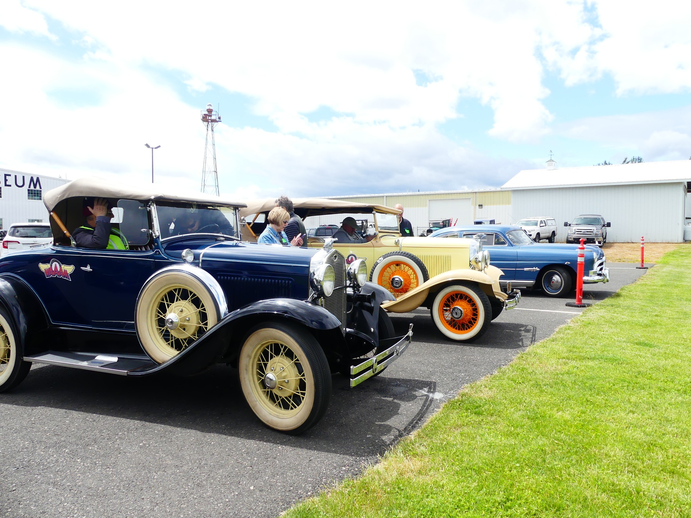

Museum Collection
Visitors at WAAAM quickly realize that our vehicles are not just a collection of old, unusable stuff. Once restored by our amazingly gifted volunteers, all of our antique cars and planes can and do run. More than that, they purrrrrr!
Automobile Collection
Our antique automobiles range in age from 1900's to the 1960's. But mostly, they're from the "Golden Age of Transportation," which took place around the 1920's, 30's, and 40's. Here are some examples ...
WAAAM's Locomobile is our 1923 Model 48 Sportif which was donated to WAAAM by Wes and Nancy Lematta of Columbia Helicopters. At a time when Ford was building thousands of cars every week Locomobile was building just four a week and each was a work of art.
Among our unusual cars are the Franklins from 1909 and 1929. The Franklin engines are air cooled and extremely well designed. The 1929 was even driven from Portland to WAAAM under its own power!
...and that's just scratching the surface!
Selected Automobile List
Click on an icon to search for that type of car


Selected Automobile List by Year
1900 Locomobile Steam Car Runabout
1910 Aultman Taylor Steam Traction Tractor
1913 REO "the 5th" Touring Car
1914 Detroit Electric Car Model 63
1915 Overland Model 82 Touring Car
1918 Chevrolet Model 490 Touring Car
1918 Chevrolet Model 490 Touring Car
1919 Ford Model T Army Ambulance
1919 Ford Model T "Quick Build Car"
1919 Republic Model 19 Flatbed Truck
1919 Samson 1.25 Ton Flatbed Truck
1919 Scripps Booth Model 39-B Touring Car
1921 Ford Model T Pickup Truck
1922 Velie Model 58 5-Passenger Touring Car
1923 Ford Model T 3-Door Sedan
1923 Locomobile Model 48 Sportif
1925 Ford Model T Pickup Truck
1926 Ford Model T Coupe on skis and tracks
1926 International Model SPD 3/4 Ton Truck
1927 Chevrolet "Outlaw" Dirt Track Racer
1927 Willys Knight Model 70A 4-Door Sedan
1927 Willys Knight Model 70A 4-Door Sedan
1928 Buick 2-Door Country Club Coupe
1928 Ford Model A Roadster Pickup
1928 Studebaker Dictator Coupe *Project on Display*
1929 Ford Model A 3-Window Town Sedan
1929 Ford Model A Roadster Pickup
1930 DeSoto Model CF Deluxe 4-door Sedan
1930 Ford Model A Standard Coupe
1931 Chevrolet Model AE 2-Door Sedan
1931 Chevrolet Model AE 4-Door Sedan
1931 Ford Model A Deluxe 2-Door Sedan
1932 Studebaker Model 55 Regis Sport Coupe
1933 International Pickup Truck
1936 Cord 810 Westchester Sedan
1936 Ford 1.5 Ton Flatbed Truck
1936 Plymouth 2-Door Coupe *Project on Display*
1939 John Deere Tractor Model B
1941 Chevrolet Master Deluxe Business Coupe
1941 Chevrolet Special Deluxe Coupe
1941 Nash Model 4145 Business Coupe
1946 McCormick-Deering W6 Tractor
1947 Dodge WF-34 1.5 Ton Truck
1947 Studebaker Commander Starlight Coupe
1950 Oldsmobile Futuramic Holiday 88 Hardtop Coupe
1950 Studebaker 1 1/2 Ton Flatbed Truck
1953 Kaiser Manhattan *Project on Display*
1955 Pontiac Catalina Star Chief
1960 Pontiac Catalina Custom Coupe
1960 Studebaker Lark VIII Deluxe Station Wagon
1962 Ford Thunderbird Convertible
1966 Chevrolet Corvette Convertible
1966 Chevrolet Corvette Stingray Coupe
1966 Ford Thunderbird Town Landau